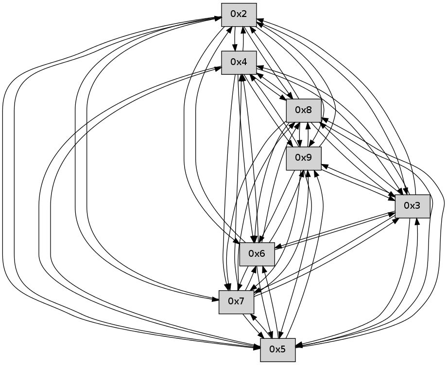

>> << IDX [start] -25 -5 +0 +5 +25 +100 [95.2998671532]
 Previous packets
----------------------------------------------------------------------
90.300985 beacon01(faad) #0 coord=01,02,03,04,05,06,07,09,08 cycle=624.0ms assoc
-- color-indic=0 64 0d aa
90.310963 beacon02(faad) #0 coord=01,02,03,04,05,06,07,09,08 cycle=624.0ms assoc 64 1d 1b
90.320964 beacon03(faad) #0 coord=01,02,03,04,05,06,07,09,08 cycle=624.0ms assoc 64 7b 94
90.330963 beacon04(faad) #0 coord=01,02,03,04,05,06,07,09,08 cycle=624.0ms assoc 64 7a 20
90.340964 beacon05(faad) #0 coord=01,02,03,04,05,06,07,09,08 cycle=624.0ms assoc 64 1c af
90.350964 beacon06(faad) #0 coord=01,02,03,04,05,06,07,09,08 cycle=624.0ms assoc 64 a7 36
90.360964 beacon07(faad) #0 coord=01,02,03,04,05,06,07,09,08 cycle=624.0ms assoc 64 c1 b9
90.370970 beacon09(faad) #0 coord=01,02,03,04,05,06,07,09,08 cycle=624.0ms assoc 64 d2 d9
90.380970 beacon08(faad) #0 coord=01,02,03,04,05,06,07,09,08 cycle=624.0ms assoc 64 b4 56
90.392403 [Hello(7): seq=63 sym=2,3,5,6,4,8,9 sysInfo= stat=2:12,0,0,0/3:8,0,0,0/5:7,0,0,0/6:4,0,0,0/4:8,0,0,0/8:1,0,0,0/9:2,0,0,0]
90.397693 [Hello(8): seq=5 sym=5,2,3,4,7 asym=6,9 sysInfo= stat=5:4,0,0,0/2:5,0,0,0/3:5,0,0,0/4:5,0,0,0/7:1,0,0,0/6:2,0,0,0/9:1,0,0,0]
90.400029 [Hello(6): seq=63 sym=2,3,5,4,7,9,8 sysInfo= stat=2:8,0,0,0/3:8,0,0,0/5:7,0,0,0/4:8,0,0,0/7:1,0,0,0/9:1,0,0,0/8:1,0,0,0]
90.409446 [Hello(9): seq=5 sym=5,2,3,4,7,6,8 sysInfo= stat=5:5,0,0,0/2:4,0,0,0/3:5,0,0,0/4:5,0,0,0/7:1,0,0,0/6:2,0,0,0/8:1,0,0,0]
----------------------------------------------------------------------
91.015111 beacon01(faad) #0 coord=01,02,03,04,05,06,07,09,08 cycle=624.0ms assoc
-- color-indic=0 64 df ad
91.025090 beacon02(faad) #0 coord=01,02,03,04,05,06,07,09,08 cycle=624.0ms assoc 64 cf 1c
91.035089 beacon03(faad) #0 coord=01,02,03,04,05,06,07,09,08 cycle=624.0ms assoc 64 a9 93
91.045090 beacon04(faad) #0 coord=01,02,03,04,05,06,07,09,08 cycle=624.0ms assoc 64 a8 27
91.055089 beacon05(faad) #0 coord=01,02,03,04,05,06,07,09,08 cycle=624.0ms assoc 64 ce a8
91.065091 beacon06(faad) #0 coord=01,02,03,04,05,06,07,09,08 cycle=624.0ms assoc 64 75 31
91.075090 beacon07(faad) #0 coord=01,02,03,04,05,06,07,09,08 cycle=624.0ms assoc 64 13 be
91.085094 beacon09(faad) #0 coord=01,02,03,04,05,06,07,09,08 cycle=624.0ms assoc 64 00 de
91.095097 beacon08(faad) #0 coord=01,02,03,04,05,06,07,09,08 cycle=624.0ms assoc 64 66 51
91.106543 [Hello(3): seq=64 sym=5,7,6,4,2,8,9 sysInfo= stat=5:6,0,0,0/7:7,0,0,0/6:12,0,0,0/4:6,0,0,0/2:10,0,0,0/8:5,0,0,0/9:4,0,0,0]
91.115118 PARSE ERROR************************
Traceback (most recent call last):
File "PacketAnalysis.py", line 167, in showOperaPacket
structPacket = OperaPacketParse.parsePacket(rawPacket)
File "../../pkg-python/HipSens/Core/OperaPacketParse.py", line 461, in parsePacket
return parseHelloMessage(data)
File "../../pkg-python/HipSens/Core/OperaPacketParse.py", line 125, in parseHelloMessage
struct.unpack("!H",linkList[:2])[0])
error: unpack requires a string argument of length 2
48 2c 04 00 00 40 00 02 02 0e 05 00 07 00 06 00 02 00 03 00 09 00 08 00 53 04 00 00 00 00 4c 0e 00 0a 00 07 00 0f 00 0a 00 0c 00 05 00 04 4d 27
----------------------------------------------------------------------
91.729237 beacon01(faad) #0 coord=01,02,03,04,05,06,07,09,08 cycle=624.0ms assoc
-- color-indic=0 64 4f 71
91.739216 beacon02(faad) #0 coord=01,02,03,04,05,06,07,09,08 cycle=624.0ms assoc 64 5f c0
91.749214 beacon03(faad) #0 coord=01,02,03,04,05,06,07,09,08 cycle=624.0ms assoc 64 39 4f
91.759215 beacon04(faad) #0 coord=01,02,03,04,05,06,07,09,08 cycle=624.0ms assoc 64 38 fb
91.769216 beacon05(faad) #0 coord=01,02,03,04,05,06,07,09,08 cycle=624.0ms assoc 64 5e 74
91.779215 beacon06(faad) #0 coord=01,02,03,04,05,06,07,09,08 cycle=624.0ms assoc 64 e5 ed
91.789216 beacon07(faad) #0 coord=01,02,03,04,05,06,07,09,08 cycle=624.0ms assoc 64 83 62
91.799221 beacon09(faad) #0 coord=01,02,03,04,05,06,07,09,08 cycle=624.0ms assoc 64 90 02
91.809221 beacon08(faad) #0 coord=01,02,03,04,05,06,07,09,08 cycle=624.0ms assoc 64 f6 8d
91.820324 [Hello(6): seq=64 sym=2,3,5,4,7,9,8 sysInfo= stat=2:8,0,0,0/3:9,0,0,0/5:7,0,0,0/4:9,0,0,0/7:1,0,0,0/9:2,0,0,0/8:1,0,0,0]
91.822707 [Hello(8): seq=6 sym=5,2,3,4,7,6,9 sysInfo= stat=5:4,0,0,0/2:5,0,0,0/3:6,0,0,0/4:6,0,0,0/7:1,0,0,0/6:3,0,0,0/9:2,0,0,0]
91.828266 [Hello(7): seq=64 sym=2,3,5,6,4,8,9 asym= sysInfo= stat=2:13,0,0,0/3:9,0,0,0/5:7,0,0,0/6:5,0,0,0/4:9,0,0,0/8:2,0,0,0/9:3,0,0,0]
----------------------------------------------------------------------
92.443363 beacon01(faad) #0 coord=01,02,03,04,05,06,07,09,08 cycle=624.0ms assoc
-- color-indic=0 64 ee 1c
92.453341 beacon02(faad) #0 coord=01,02,03,04,05,06,07,09,08 cycle=624.0ms assoc 64 fe ad
92.463340 beacon03(faad) #0 coord=01,02,03,04,05,06,07,09,08 cycle=624.0ms assoc 64 98 22
92.473341 beacon04(faad) #0 coord=01,02,03,04,05,06,07,09,08 cycle=624.0ms assoc 64 99 96
92.483342 beacon05(faad) #0 coord=01,02,03,04,05,06,07,09,08 cycle=624.0ms assoc 64 ff 19
92.493342 beacon06(faad) #0 coord=01,02,03,04,05,06,07,09,08 cycle=624.0ms assoc 64 44 80
92.503342 beacon07(faad) #0 coord=01,02,03,04,05,06,07,09,08 cycle=624.0ms assoc 64 22 0f
92.513347 beacon09(faad) #0 coord=01,02,03,04,05,06,07,09,08 cycle=624.0ms assoc 64 31 6f
92.523346 beacon08(faad) #0 coord=01,02,03,04,05,06,07,09,08 cycle=624.0ms assoc 64 57 e0
92.535408 [Hello(2): seq=65 sym=4,5,7,6,3,9,8 sysInfo= stat=4:9,0,0,0/5:0,0,0,0/7:0,0,0,0/6:8,0,0,0/3:14,0,0,0/9:5,0,0,0/8:4,0,0,0]
92.540027 [Hello(4): seq=65 sym=5,7,6,2,3,9,8 sysInfo= stat=5:10,0,0,0/7:8,0,0,0/6:0,0,0,0/2:10,0,0,0/3:12,0,0,0/9:6,0,0,0/8:4,0,0,0]
92.543050 [Hello(3): seq=65 sym=5,7,6,4,2,8,9 sysInfo= stat=5:6,0,0,0/7:8,0,0,0/6:13,0,0,0/4:7,0,0,0/2:11,0,0,0/8:6,0,0,0/9:4,0,0,0]
----------------------------------------------------------------------
93.157487 beacon01(faad) #0 coord=01,02,03,04,05,06,07,09,08 cycle=624.0ms assoc
-- color-indic=0 64 7e c0
93.167465 beacon02(faad) #0 coord=01,02,03,04,05,06,07,09,08 cycle=624.0ms assoc 64 6e 71
93.177466 beacon03(faad) #0 coord=01,02,03,04,05,06,07,09,08 cycle=624.0ms assoc 64 08 fe
93.187466 beacon04(faad) #0 coord=01,02,03,04,05,06,07,09,08 cycle=624.0ms assoc 64 09 4a
93.197467 beacon05(faad) #0 coord=01,02,03,04,05,06,07,09,08 cycle=624.0ms assoc 64 6f c5
93.207466 beacon06(faad) #0 coord=01,02,03,04,05,06,07,09,08 cycle=624.0ms assoc 64 d4 5c
93.217467 beacon07(faad) #0 coord=01,02,03,04,05,06,07,09,08 cycle=624.0ms assoc 64 b2 d3
93.227472 beacon09(faad) #0 coord=01,02,03,04,05,06,07,09,08 cycle=624.0ms assoc 64 a1 b3
93.237472 beacon08(faad) #0 coord=01,02,03,04,05,06,07,09,08 cycle=624.0ms assoc 64 c7 3c
93.249224 [Hello(6): seq=65 sym=2,3,5,4,7,9,8 sysInfo= stat=2:9,0,0,0/3:10,0,0,0/5:7,0,0,0/4:10,0,0,0/7:2,0,0,0/9:2,0,0,0/8:2,0,0,0]
93.252249 [Hello(7): seq=65 sym=2,3,5,6,4,8,9 sysInfo= stat=2:14,0,0,0/3:10,0,0,0/5:7,0,0,0/6:5,0,0,0/4:10,0,0,0/8:2,0,0,0/9:3,0,0,0]
93.255128 [Hello(8): seq=7 sym=5,2,3,4,7,6,9 sysInfo= stat=5:4,0,0,0/2:6,0,0,0/3:7,0,0,0/4:7,0,0,0/7:2,0,0,0/6:3,0,0,0/9:2,0,0,0]
93.259728 [Hello(9): seq=7 sym=5,2,3,4,7,6,8 sysInfo= stat=5:6,0,0,0/2:4,0,0,0/3:7,0,0,0/4:7,0,0,0/7:2,0,0,0/6:2,0,0,0/8:1,0,0,0]
----------------------------------------------------------------------
93.871612 beacon01(faad) #0 coord=01,02,03,04,05,06,07,09,08 cycle=624.0ms assoc
-- color-indic=0 64 4a 13
93.881589 beacon02(faad) #0 coord=01,02,03,04,05,06,07,09,08 cycle=624.0ms assoc 64 5a a2
93.891590 beacon03(faad) #0 coord=01,02,03,04,05,06,07,09,08 cycle=624.0ms assoc 64 3c 2d
93.901592 beacon04(faad) #0 coord=01,02,03,04,05,06,07,09,08 cycle=624.0ms assoc 64 3d 99
93.911589 beacon05(faad) #0 coord=01,02,03,04,05,06,07,09,08 cycle=624.0ms assoc 64 5b 16
93.921590 beacon06(faad) #0 coord=01,02,03,04,05,06,07,09,08 cycle=624.0ms assoc 64 e0 8f
93.931590 beacon07(faad) #0 coord=01,02,03,04,05,06,07,09,08 cycle=624.0ms assoc 64 86 00
93.941596 beacon09(faad) #0 coord=01,02,03,04,05,06,07,09,08 cycle=624.0ms assoc 64 95 60
93.951596 beacon08(faad) #0 coord=01,02,03,04,05,06,07,09,08 cycle=624.0ms assoc 64 f3 ef
93.965720 [Hello(4): seq=66 sym=5,7,6,2,3,9,8 sysInfo= stat=5:10,0,0,0/7:9,0,0,0/6:1,0,0,0/2:10,0,0,0/3:13,0,0,0/9:7,0,0,0/8:5,0,0,0]
93.969573 [Hello(5): seq=66 sym=7,6,4,2,3,9,8 sysInfo= stat=7:14,0,0,0/6:10,0,0,0/4:5,0,0,0/2:3,0,0,0/3:3,0,0,0/9:7,0,0,0/8:5,0,0,0]
----------------------------------------------------------------------
94.585740 beacon01(faad) #0 coord=01,02,03,04,05,06,07,09,08 cycle=624.0ms assoc
-- color-indic=0 64 da cf
94.595717 beacon02(faad) #0 coord=01,02,03,04,05,06,07,09,08 cycle=624.0ms assoc 64 ca 7e
94.605718 beacon03(faad) #0 coord=01,02,03,04,05,06,07,09,08 cycle=624.0ms assoc 64 ac f1
94.615719 beacon04(faad) #0 coord=01,02,03,04,05,06,07,09,08 cycle=624.0ms assoc 64 ad 45
94.625720 beacon05(faad) #0 coord=01,02,03,04,05,06,07,09,08 cycle=624.0ms assoc 64 cb ca
94.635720 beacon06(faad) #0 coord=01,02,03,04,05,06,07,09,08 cycle=624.0ms assoc 64 70 53
94.645721 beacon07(faad) #0 coord=01,02,03,04,05,06,07,09,08 cycle=624.0ms assoc 64 16 dc
94.655722 beacon09(faad) #0 coord=01,02,03,04,05,06,07,09,08 cycle=624.0ms assoc 64 05 bc
94.665723 beacon08(faad) #0 coord=01,02,03,04,05,06,07,09,08 cycle=624.0ms assoc 64 63 33
94.677146 [Hello(9): seq=8 sym=5,2,3,4,7,6,8 sysInfo= stat=5:7,0,0,0/2:5,0,0,0/3:7,0,0,0/4:8,0,0,0/7:2,0,0,0/6:2,0,0,0/8:1,0,0,0]
94.682403 [Hello(8): seq=8 sym=5,2,3,4,7,6,9 sysInfo= stat=5:5,0,0,0/2:6,0,0,0/3:8,0,0,0/4:8,0,0,0/7:2,0,0,0/6:3,0,0,0/9:3,0,0,0]
94.686060 [Hello(7): seq=66 sym=2,3,5,6,4,8,9 sysInfo= stat=2:14,0,0,0/3:10,0,0,0/5:8,0,0,0/6:5,0,0,0/4:11,0,0,0/8:3,0,0,0/9:4,0,0,0]
94.688311 [Hello(6): seq=66 sym=2,3,5,4,7,9,8 sysInfo= stat=2:9,0,0,0/3:11,0,0,0/5:8,0,0,0/4:11,0,0,0/7:3,0,0,0/9:3,0,0,0/8:3,0,0,0]